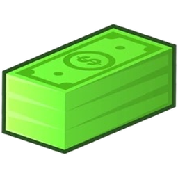

Cash Suffixes
What does that number mean?
Type an amount like 25Qn, 1.5e+45, 3 septillion or a plain number. Suffixes are case-sensitive in-game (qd and QnD are different), so the converter checks the exact spelling first.
Every cash suffix
Each suffix is 1,000 times the one before it. Names follow the Conway-Wechsler system for naming big numbers. Click any suffix to open it in the converter.

No suffixes match
Try another search.
How the cash cap grew
The biggest suffix in the game has climbed from Sextillion (21 zeros) at launch to Uncentillion (306 zeros) today.
The full timeline from the wiki
Glitched suffixes
Bugs over the years have produced some very strange cash amounts. Most were patched, and some wiped people's saves.
Scientific notation
Numbers too big to write out are shown as m × 10n: a number between 1 and 10, times 10 raised to a power. The game (and this wiki) writes it as me+n, so 1.23e+4 means 12,300 and 4.56e-2 means 0.0456.